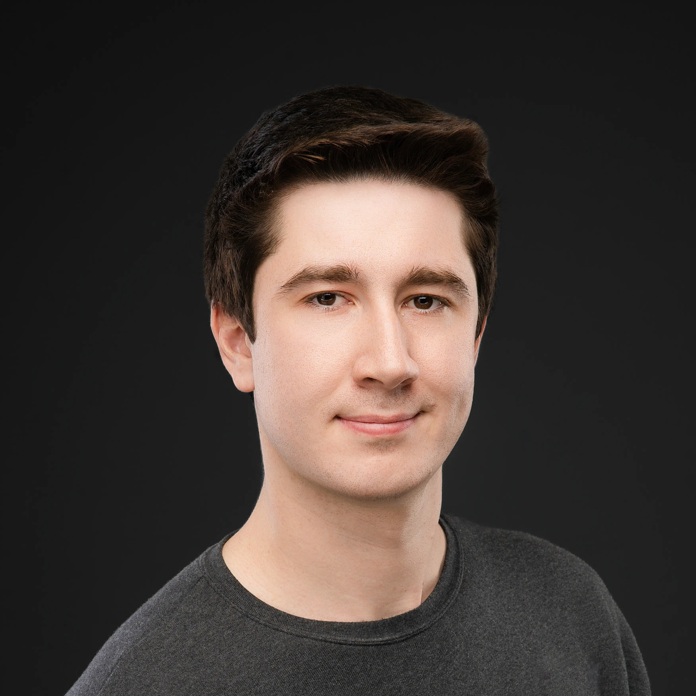

About
Mission
Steinmetz is on a mission to re-accelerate the electrification of the entire world.
The electric powertrain provides a theoretically perfect form of energy transfer.
Energy can be converted to various forms with nearly 100% efficiency.
Despite the boons of this miraculous technology, today we live in a world of expensive, heavy and unreliable electric vehicles. Steinmetz is setting out to solve this issue by creating cost-effective, highly-performant, and easy to use subsystems for EVs and Robotics.
In the coming decades we will see a complete electrification of society from cars to planes to boats to labor. The platform of that society will be built on Steinmetz.
Despite the boons of this miraculous technology, today we live in a world of expensive, heavy and unreliable electric vehicles. Steinmetz is setting out to solve this issue by creating cost-effective, highly-performant, and easy to use subsystems for EVs and Robotics.
In the coming decades we will see a complete electrification of society from cars to planes to boats to labor. The platform of that society will be built on Steinmetz.
Team

Owen Brake
CEO
Owen is driven by a passion for solving complex, multidisciplinary challenges.
With a diverse background spanning from managing multi-billion record SQL databases to leading advanced vehicle simulations and navigating FCC qualifications, he brings a unique blend of technical expertise and strategic insight.
Owen has honed his skills at some of the world's top companies, including Tesla, Apple, Ford, and Neuralink, as well as several startups.
His lived experience and leadership ability is what drove him to found Steinmetz in 2024.
Ethan Childerhose
CTO
Ethan grew up in Ontario, Canada cutting his teeth on numerous hobby projects and competing extensively in student robotics reaching international success. Ethan has fullstack engineering skills from mechanical engineering to semiconductor design at companies such as Tesla, Neuralink, Nvidia, and RocketLab. He prides himself in working across the technical stack, tackling complex problems in cross-disciplinary ways.